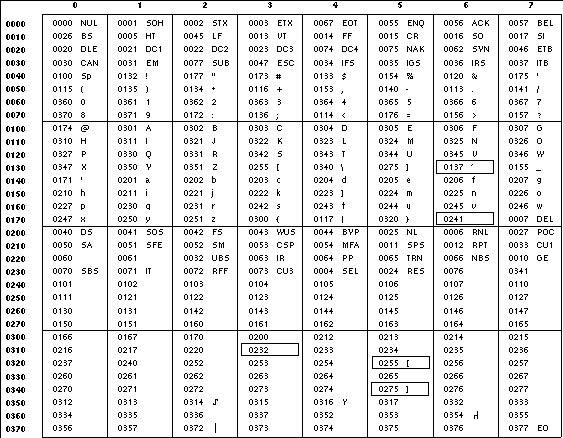

The Open Group Base Specifications Issue 6
IEEE Std 1003.1-2001
Copyright © 2001 The IEEE and The Open Group, All Rights reserved.
NAME
dd - convert and copy a file
SYNOPSIS
dd [operand ...]
DESCRIPTION
The dd utility shall copy the specified input file to the specified output file with possible conversions using specific
input and output block sizes. It shall read the input one block at a time, using the specified input block size; it shall then
process the block of data actually returned, which could be smaller than the requested block size. It shall apply any conversions
that have been specified and write the resulting data to the output in blocks of the specified output block size. If the bs=
expr operand is specified and no conversions other than sync, noerror, or notrunc are requested, the
data returned from each input block shall be written as a separate output block; if the read returns less than a full block and the
sync conversion is not specified, the resulting output block shall be the same size as the input block. If the bs=
expr operand is not specified, or a conversion other than sync, noerror, or notrunc is requested, the
input shall be processed and collected into full-sized output blocks until the end of the input is reached.
The processing order shall be as follows:
-
An input block is read.
-
If the input block is shorter than the specified input block size and the sync conversion is specified, null bytes shall
be appended to the input data up to the specified size. (If either block or unblock is also specified, <space>s
shall be appended instead of null bytes.) The remaining conversions and output shall include the pad characters as if they had been
read from the input.
-
If the bs= expr operand is specified and no conversion other than sync or noerror is requested, the
resulting data shall be written to the output as a single block, and the remaining steps are omitted.
-
If the swab conversion is specified, each pair of input data bytes shall be swapped. If there is an odd number of bytes
in the input block, the last byte in the input record shall not be swapped.
-
Any remaining conversions ( block, unblock, lcase, and ucase) shall be performed. These conversions
shall operate on the input data independently of the input blocking; an input or output fixed-length record may span block
boundaries.
-
The data resulting from input or conversion or both shall be aggregated into output blocks of the specified size. After the end
of input is reached, any remaining output shall be written as a block without padding if conv= sync is not specified;
thus, the final output block may be shorter than the output block size.
OPTIONS
None.
OPERANDS
All of the operands shall be processed before any input is read. The following operands shall be supported:
- if=file
- Specify the input pathname; the default is standard input.
- of=file
- Specify the output pathname; the default is standard output. If the seek= expr conversion is not also specified,
the output file shall be truncated before the copy begins if an explicit of= file operand is specified, unless
conv= notrunc is specified. If seek= expr is specified, but conv= notrunc is not, the
effect of the copy shall be to preserve the blocks in the output file over which dd seeks, but no other portion of the
output file shall be preserved. (If the size of the seek plus the size of the input file is less than the previous size of the
output file, the output file shall be shortened by the copy.)
- ibs=expr
- Specify the input block size, in bytes, by expr (default is 512).
- obs=expr
- Specify the output block size, in bytes, by expr (default is 512).
- bs=expr
- Set both input and output block sizes to expr bytes, superseding ibs= and obs=. If no conversion other
than sync, noerror, and notrunc is specified, each input block shall be copied to the output as a single block
without aggregating short blocks.
- cbs=expr
- Specify the conversion block size for block and unblock in bytes by expr (default is zero). If cbs=
is omitted or given a value of zero, using block or unblock produces unspecified results.
[XSI] ![[Option Start]](../images/opt-start.gif) The application shall ensure that this operand is also specified if the conv= operand is specified with a value of
ascii, ebcdic, or ibm. For a conv= operand with an ascii value, the input is handled as
described for the unblock value, except that characters are converted to ASCII before any trailing <space>s are
deleted. For conv= operands with ebcdic or ibm values, the input is handled as described for the block
value except that the characters are converted to EBCDIC or IBM EBCDIC, respectively, after any trailing <space>s are added.
The application shall ensure that this operand is also specified if the conv= operand is specified with a value of
ascii, ebcdic, or ibm. For a conv= operand with an ascii value, the input is handled as
described for the unblock value, except that characters are converted to ASCII before any trailing <space>s are
deleted. For conv= operands with ebcdic or ibm values, the input is handled as described for the block
value except that the characters are converted to EBCDIC or IBM EBCDIC, respectively, after any trailing <space>s are added.
![[Option End]](../images/opt-end.gif)
- skip=n
- Skip n input blocks (using the specified input block size) before starting to copy. On seekable files, the
implementation shall read the blocks or seek past them; on non-seekable files, the blocks shall be read and the data shall be
discarded.
- seek=n
- Skip n blocks (using the specified output block size) from the beginning of the output file before copying. On
non-seekable files, existing blocks shall be read and space from the current end-of-file to the specified offset, if any, filled
with null bytes; on seekable files, the implementation shall seek to the specified offset or read the blocks as described for
non-seekable files.
- count=n
- Copy only n input blocks.
- conv=value[,value ...]
Where values are comma-separated symbols from the following list:
- ascii
- [XSI]
Convert EBCDIC to ASCII; see ASCII to EBCDIC Conversion .
- ebcdic
- [XSI]
Convert ASCII to EBCDIC; see ASCII to EBCDIC Conversion .
- ibm
- [XSI]
Convert ASCII to a different EBCDIC set; see ASCII to IBM EBCDIC Conversion .
The ascii, ebcdic, and ibm values are mutually-exclusive.
- block
- Treat the input as a sequence of <newline>-terminated or end-of-file-terminated variable-length records independent of
the input block boundaries. Each record shall be converted to a record with a fixed length specified by the conversion block size.
Any <newline> shall be removed from the input line; <space>s shall be appended to lines that are shorter than their
conversion block size to fill the block. Lines that are longer than the conversion block size shall be truncated to the largest
number of characters that fit into that size; the number of truncated lines shall be reported (see the STDERR section).
The block and unblock values are mutually-exclusive.
- unblock
- Convert fixed-length records to variable length. Read a number of bytes equal to the conversion block size (or the number of
bytes remaining in the input, if less than the conversion block size), delete all trailing <space>s, and append a
<newline>.
- lcase
- Map uppercase characters specified by the LC_CTYPE keyword tolower to the corresponding lowercase character.
Characters for which no mapping is specified shall not be modified by this conversion.
The lcase and ucase symbols are mutually-exclusive.
- ucase
- Map lowercase characters specified by the LC_CTYPE keyword toupper to the corresponding uppercase character.
Characters for which no mapping is specified shall not be modified by this conversion.
- swab
- Swap every pair of input bytes.
- noerror
- Do not stop processing on an input error. When an input error occurs, a diagnostic message shall be written on standard error,
followed by the current input and output block counts in the same format as used at completion (see the STDERR section). If the
sync conversion is specified, the missing input shall be replaced with null bytes and processed normally; otherwise, the
input block shall be omitted from the output.
- notrunc
- Do not truncate the output file. Preserve blocks in the output file not explicitly written by this invocation of the dd
utility. (See also the preceding of= file operand.)
- sync
- Pad every input block to the size of the ibs= buffer, appending null bytes. (If either block or unblock is
also specified, append <space>s, rather than null bytes.)
The behavior is unspecified if operands other than conv= are specified more than once.
For the bs=, cbs=, ibs=, and obs= operands, the application shall supply an expression specifying a
size in bytes. The expression, expr, can be:
-
A positive decimal number
-
A positive decimal number followed by k, specifying multiplication by 1024
-
A positive decimal number followed by b, specifying multiplication by 512
-
Two or more positive decimal numbers (with or without k or b) separated by x, specifying the product of the
indicated values
All of the operands are processed before any input is read.
[XSI]
The following two tables display the octal number character values used for the ascii and ebcdic conversions (first
table) and for the ibm conversion (second table). In both tables, the ASCII values are the row and column headers and the
EBCDIC values are found at their intersections. For example, ASCII 0012 (LF) is the second row, third column, yielding 0045 in
EBCDIC. The inverted tables (for EBCDIC to ASCII conversion) are not shown, but are in one-to-one correspondence with these tables.
The differences between the two tables are highlighted by small boxes drawn around five entries.
Table: ASCII to EBCDIC Conversion

Table: ASCII to IBM EBCDIC Conversion

STDIN
If no if= operand is specified, the standard input shall be used. See the INPUT FILES section.
INPUT FILES
The input file can be any file type.
ENVIRONMENT VARIABLES
The following environment variables shall affect the execution of dd:
- LANG
- Provide a default value for the internationalization variables that are unset or null. (See the Base Definitions volume of
IEEE Std 1003.1-2001, Section 8.2, Internationalization Variables for
the precedence of internationalization variables used to determine the values of locale categories.)
- LC_ALL
- If set to a non-empty string value, override the values of all the other internationalization variables.
- LC_CTYPE
- Determine the locale for the interpretation of sequences of bytes of text data as characters (for example, single-byte as
opposed to multi-byte characters in arguments and input files), the classification of characters as uppercase or lowercase, and the
mapping of characters from one case to the other.
- LC_MESSAGES
- Determine the locale that should be used to affect the format and contents of diagnostic messages written to standard error and
informative messages written to standard output.
- NLSPATH
- [XSI]
Determine the location of message catalogs for the processing of LC_MESSAGES .
ASYNCHRONOUS EVENTS
For SIGINT, the dd utility shall interrupt its current processing, write status information to standard error, and exit
as though terminated by SIGINT. It shall take the standard action for all other signals; see the ASYNCHRONOUS EVENTS section in Utility Description Defaults .
STDOUT
If no of= operand is specified, the standard output shall be used. The nature of the output depends on the operands
selected.
STDERR
On completion, dd shall write the number of input and output blocks to standard error. In the POSIX locale the following
formats shall be used:
"%u+%u records in\n", <number of whole input blocks>,
<number of partial input blocks>
"%u+%u records out\n", <number of whole output blocks>,
<number of partial output blocks>
A partial input block is one for which read() returned less than the input block
size. A partial output block is one that was written with fewer bytes than specified by the output block size.
In addition, when there is at least one truncated block, the number of truncated blocks shall be written to standard error. In
the POSIX locale, the format shall be:
"%u truncated %s\n", <number of truncated blocks>, "record" (if
<number of truncated blocks> is one) "records" (otherwise)
Diagnostic messages may also be written to standard error.
OUTPUT FILES
If the of= operand is used, the output shall be the same as described in the STDOUT section.
EXTENDED DESCRIPTION
None.
EXIT STATUS
The following exit values shall be returned:
- 0
- The input file was copied successfully.
- >0
- An error occurred.
CONSEQUENCES OF ERRORS
If an input error is detected and the noerror conversion has not been specified, any partial output block shall be
written to the output file, a diagnostic message shall be written, and the copy operation shall be discontinued. If some other
error is detected, a diagnostic message shall be written and the copy operation shall be discontinued.
The following sections are informative.
APPLICATION USAGE
The input and output block size can be specified to take advantage of raw physical I/O.
There are many different versions of the EBCDIC codesets. The ASCII and EBCDIC conversions specified for the dd utility
perform conversions for the version specified by the tables.
EXAMPLES
The following command:
dd if=/dev/rmt0h of=/dev/rmt1h
copies from tape drive 0 to tape drive 1, using a common historical device naming convention.
The following command:
dd ibs=10 skip=1
strips the first 10 bytes from standard input.
This example reads an EBCDIC tape blocked ten 80-byte EBCDIC card images per block into the ASCII file x:
dd if=/dev/tape of=x ibs=800 cbs=80 conv=ascii,lcase
RATIONALE
The OPTIONS section is listed as "None" because there are no options recognized by historical dd utilities. Certainly,
many of the operands could have been designed to use the Utility Syntax Guidelines, which would have resulted in the classic
hyphenated option letters. In this version of this volume of IEEE Std 1003.1-2001, dd retains its curious JCL-like
syntax due to the large number of applications that depend on the historical implementation.
A suggested implementation technique for conv= noerror, sync is to zero (or <space>-fill, if
blocking or unblocking) the input buffer before each read and to write the contents of the input buffer to the output
even after an error. In this manner, any data transferred to the input buffer before the error was detected is preserved. Another
point is that a failed read on a regular file or a disk generally does not increment the file offset, and dd must then seek
past the block on which the error occurred; otherwise, the input error occurs repetitively. When the input is a magnetic tape,
however, the tape normally has passed the block containing the error when the error is reported, and thus no seek is necessary.
The default ibs= and obs= sizes are specified as 512 bytes because there are historical (largely portable) scripts
that assume these values. If they were left unspecified, unusual results could occur if an implementation chose an odd block
size.
Historical implementations of dd used creat() when processing of=
file. This makes the seek= operand unusable except on special files. The conv= notrunc feature was
added because more recent BSD-based implementations use open() (without O_TRUNC)
instead of creat(), but they fail to delete output file contents after the data
copied.
The w multiplier (historically meaning word), is used in System V to mean 2 and in 4.2 BSD to mean 4. Since
word is inherently non-portable, its use is not supported by this volume of IEEE Std 1003.1-2001.
Standard EBCDIC does not have the characters '[' and ']' . The values used in the table are taken from a
common print train that does contain them. Other than those characters, the print train values are not filled in, but appear to
provide some of the motivation for the historical choice of translations reflected here.
The Standard EBCDIC table provides a 1:1 translation for all 256 bytes.
The IBM EBCDIC table does not provide such a translation. The marked cells in the tables differ in such a way that:
-
EBCDIC 0112 ( '¢' ) and 0152 (broken pipe) do not appear in the table.
-
EBCDIC 0137 ( '¬' ) translates to/from ASCII 0236 ( '^' ). In the standard table, EBCDIC 0232 (no graphic)
is used.
-
EBCDIC 0241 ( '˜' ) translates to/from ASCII 0176 ( '˜' ). In the standard table, EBCDIC 0137 (
'¬' ) is used.
-
0255 ( '[' ) and 0275 ( ']' ) appear twice, once in the same place as for the standard table and once in place
of 0112 ( '¢' ) and 0241 ( '˜' ).
In net result:
EBCDIC 0275 ( ']' ) displaced EBCDIC 0241 ( '˜' ) in cell 0345.
That displaced EBCDIC 0137 ( '¬' ) in cell 0176.
That displaced EBCDIC 0232 (no graphic) in cell 0136.
That replaced EBCDIC 0152 (broken pipe) in cell 0313.
EBCDIC 0255 ( '[' ) replaced EBCDIC 0112 ( '¢' ).
This translation, however, reflects historical practice that (ASCII) '˜' and '¬' were often mapped to
each other, as were '[' and '¢' ; and ']' and (EBCDIC) '˜' .
The cbs operand is required if any of the ascii, ebcdic, or ibm operands are specified. For the
ascii operand, the input is handled as described for the unblock operand except that characters are converted to
ASCII before the trailing <space>s are deleted. For the ebcdic and ibm operands, the input is handled as
described for the block operand except that the characters are converted to EBCDIC or IBM EBCDIC after the trailing
<space>s are added.
The block and unblock keywords are from historical BSD practice.
The consistent use of the word record in standard error messages matches most historical practice. An earlier version of
System V used block, but this has been updated in more recent releases.
Early proposals only allowed two numbers separated by x to be used in a product when specifying bs=, cbs=,
ibs=, and obs= sizes. This was changed to reflect the historical practice of allowing multiple numbers in the product
as provided by Version 7 and all releases of System V and BSD.
A change to the swab conversion is required to match historical practice and is the result of IEEE PASC Interpretations
1003.2 #03 and #04, submitted for the ISO POSIX-2:1993 standard.
A change to the handling of SIGINT is required to match historical practice and is the result of IEEE PASC Interpretation 1003.2
#06 submitted for the ISO POSIX-2:1993 standard.
FUTURE DIRECTIONS
None.
SEE ALSO
Utility Description Defaults , sed , tr
CHANGE HISTORY
First released in Issue 2.
Issue 5
The second paragraph of the cbs= description is reworded and marked EX.
The FUTURE DIRECTIONS section is added.
Issue 6
Changes are made to swab conversion and SIGINT handling to align with the IEEE P1003.2b draft standard.
The normative text is reworded to avoid use of the term "must" for application requirements.
IEEE PASC Interpretation 1003.2 #209 is applied, clarifying the interaction between dd of= file and
conv= notrunc.
End of informative text.
UNIX ® is a registered Trademark of The Open Group.
POSIX ® is a registered Trademark of The IEEE.
[ Main Index | XBD | XCU | XSH | XRAT
]